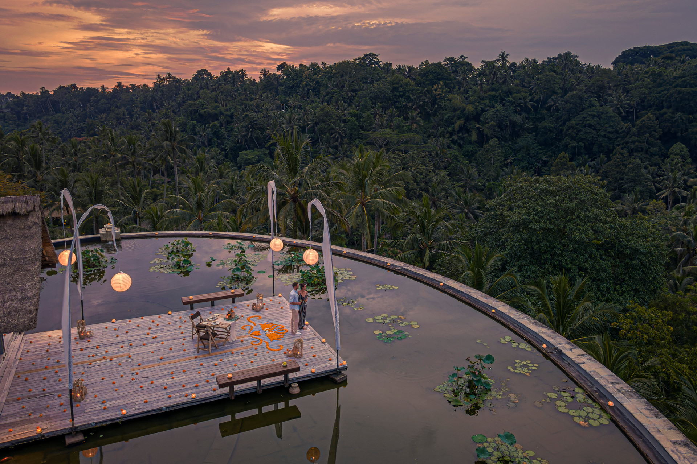

Momentos que
no se olvidan
5 ideas para inspirarte con Indonesia. Tu viaje Bassa lo construiremos contigo, a medida y sin límites.




Itinerarios slow, hoteles con criterio y soporte cercano en español — antes y durante el viaje.
Diseña tu viaje Descubre másBassa Travels es una agencia boutique especializada en slow luxury en Indonesia. Diseñamos itinerarios a medida, con criterio de selección de hoteles y soporte cercano en español antes y durante el viaje.
Nada de tours masivos. Nada de paquetes cerrados. Solo experiencias pensadas para ti.
Itinerarios 100% a medida, adaptados a tu ritmo y estilo.
Trabajamos con un número limitado de viajeros al año para dedicarle a cada viaje la atención que merece.
Solo hoteles que conocemos. Solo experiencias que tienen sentido para ti.
5 ideas para inspirarte con Indonesia. Tu viaje Bassa lo construiremos contigo, a medida y sin límites.

Indonesia es enorme. Para un viaje BASSA priorizamos calidad, calma y pocos cambios. Te ayudamos a elegir las islas que mejor encajan con tu estilo y ritmo.
Cuéntanos tu viajeEn una llamada breve entendemos tu estilo y preparamos una propuesta clara, premium y sin complicaciones. Sin formularios eternos, sin esperas innecesarias.
Fechas, estilo y tipo de viaje. Lo justo para empezar.
Aterrizamos ritmo, islas, hoteles y los imprescindibles de tu viaje.
Itinerario visual con hoteles concretos, experiencias nombradas y opciones premium.
Bloqueamos servicios y te acompañamos antes y durante el viaje.

En Indonesia, contamos con receptivos locales de confianza, seleccionados por su acceso a experiencias exclusivas, su conocimiento profundo del país y sus personas.
Un asesor de Bassa Travels se pondrá en contacto contigo para confeccionar el gran viaje a medida que tienes en mente. Los viajes Bassa parten desde 3.500 € por persona en servicios terrestres.
La consulta inicial es completamente gratuita y sin ningún tipo de compromiso.
Te contactamos el siguiente día hábil para agendar vuestra llamada.
Te acompañamos antes, durante y después del viaje con atención directa y personalizada.
Viajes slow luxury en Indonesia: itinerarios privados, hoteles con criterio, experiencias bien trabajadas. Todo a medida, sin paquetes cerrados ni grupos.
Formulario → llamada breve → propuesta con ruta y hoteles → ajustes → reservas y soporte. Un proceso premium e iterativo.
Para asegurar disponibilidad premium: 4–6 meses en temporada baja y 8–10 meses en temporada alta. Algunos alojamientos exclusivos requieren más.
No abrimos grupos. Diseñamos viajes privados: parejas, familias, amigos. La privacidad es parte del producto.
Podemos recomendarlos y coordinarlos, pero lo habitual es tratarlos aparte para darte más flexibilidad de aerolínea, horarios y puntos.
No. Diseñamos contigo sin coste. El valor está en nuestra propuesta, recomendaciones y soporte integral.
Sí: antes, durante y después. En slow luxury el valor real es tener un concierge que resuelve cualquier fricción en destino.
Sí. Indonesia funciona muy bien para ambos: en familia, aventura suave + descanso; en luna de miel, privacidad + experiencias exclusivas y bien curadas.